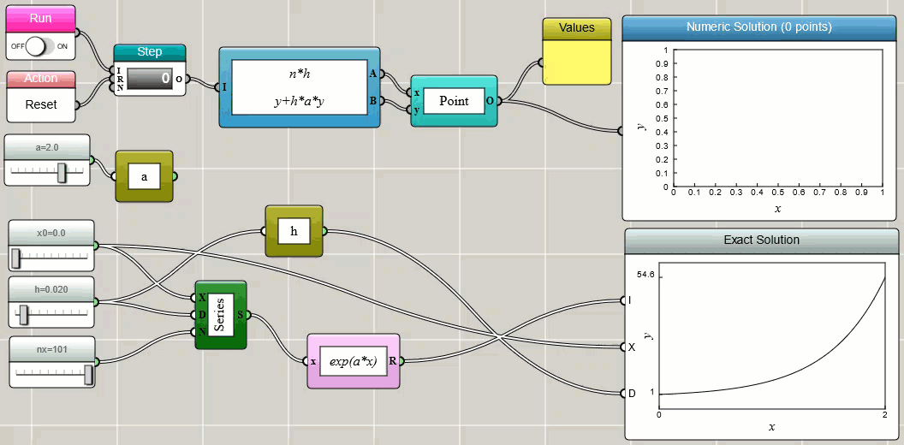
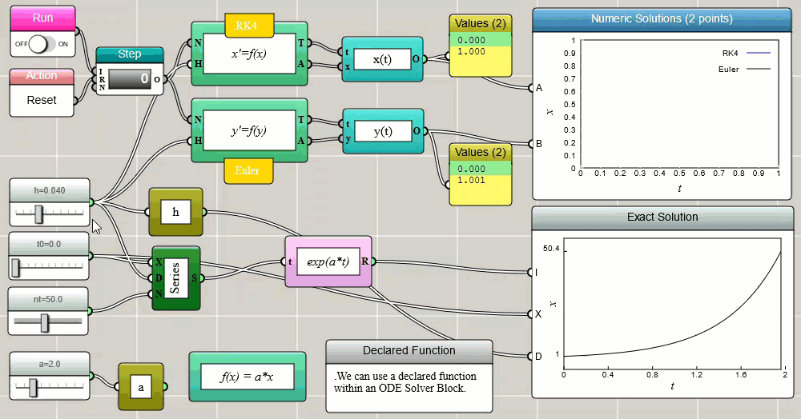
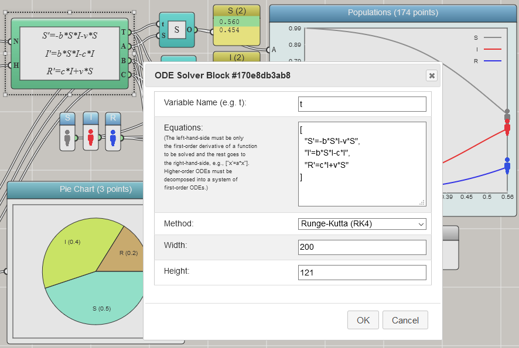
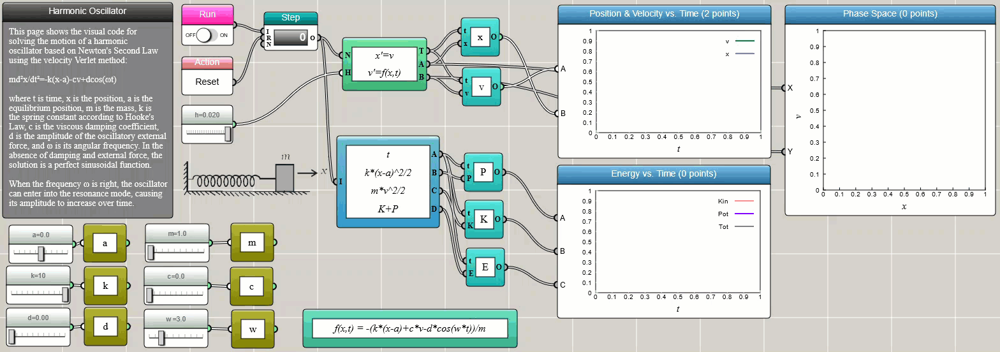
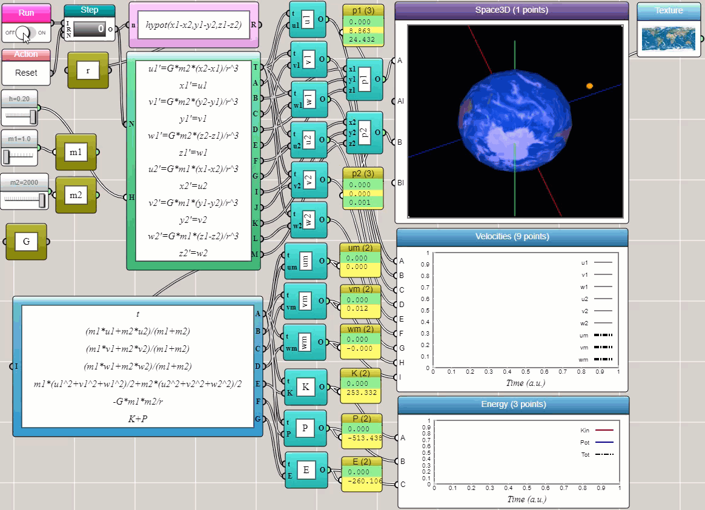

Ordinary Differential Equation Solvers
By Charles Xie ✉
Listen to a podcast about this article
An ordinary differential equation (ODE) is a differential equation containing one or more functions of a single independent variable and the derivatives of those functions. The term "ordinary" is used to differentiate an ODE from the partial differential equation (PDE) that involves multiple independent variables. In general, an explicit ODE of order n can be written as:
F(x, y, y', y'', ..., y(n+1)) = y(n)
To solve an ODE, it is a common practice to reduce the order of the equation. The above equation can be rewritten as a system of n first-order ODEs by defining a new family of unknown functions:
yi = y(i-1)
for i=1, 2, 3, ..., n. The n-dimensional system of first-order coupled ODEs is then:
y = y1
y'1 = y2
y'2 = y3
.
.
.
y'n-1 = yn
y'n = F(x, y1, y2, y3, ..., yn)
The first-order ODE can be solved using a few methods in iFlow.
The Euler method
The Euler method is the simplest numerical procedure for solving first-order ODEs with a given initial value. An initial value problem is a differential equation of the following form:
y'(t) = f(t, y(t)), y(t0) = y0
We can discretize the first-order derivative as y'(t) = [y(t+h)-y(t)]/h. We choose a value h for the size of every step and set a series of time points as tn = t0 + nh. Now, one step of the Euler method from tn to tn+1 is
yn+1 = yn + hf(tn, yn)
The value of yn is an approximation of the solution to the ODE at time tn: yn ≈ y(tn). We can easily implement this and compare the numerical solution with the exact solution in iFlow:

Click HERE to play with the above example
The above implementation uses a Worker block and a Bundled Functions block to calculate the (x, y) points iteratively.
The results are then used to draw a line plot dynamically with a Space2D block.
As the Space2D block is set to accept an object as an input,
we need to use an object block to convert the two numbers output from the Bundled Functions block to a single point object before feeding it to the Space2D block.
In iFlow, this type of block is called adapters since they are similar to adapters in electronics for converting signals.
For those who know conventional programming, such an adapter is often written as a wrapper: new Point(x, y).
To make the calculation iterative, we choose the Global Object block, which defines a global object with two global variables x and y
— the latter is referenced in and updated by the Bundled Functions block.
Although you can implement your own Euler solver as shown above, iFlow provides a built-in ODE Solver block ready for you to use. The following screenshot shows the ODE Solver block in action for a simple problem of exponential growth:

Click HERE to play with the above example
The Runge-Kutta method
Notice that the above screenshot also uses the fourth-order Runge-Kutta method (RK4) and compares its result with that of the Euler method. The ODE Solver block in iFlow provides a variety of methods for you to pick and choose. The Euler and RK4 methods are two of the options. As you can see, RK4 is generally more accurate than Euler, especially when you use a larger time step.
An advantage with the built-in ODE solver is that you can directly write one or more first-order ODEs into the setup window as shown below (except that, with the current version of iFlow, you still need to follow the JSON convention to surround each ODE with double quotes, separate the ODEs with a comma, and enclose them in a pair of square brackets):

Click HERE to play with the above example
The Velocity-Verlet method
The Velocity-Verlet method is a numerical procedure commonly used to integrate Newton's equation of motion, which is a second-order ODE:
x'' = f(x, t)/m
where x is the coordinate, f is the force function that depends on time and coordinate, and m is the mass. This equation can be reduced to two first-order ODEs as follows:
x' = v
v' = f(x, t)/m
where v is the velocity. The following screenshot shows the iFlow diagram for solving Newton's equation of motion for a harmonic oscillator using the built-in ODE Solver block:

Click HERE to play with the above example
We choose the Velocity-Verlet method in the above example as it conserves the total energy more accurately than the Euler method and the Runge-Kutta method. The Velocity-Verlet method is known as a symplectic integrator that preserves the form of Newton's equation of motion.
Coupled ODEs
Coupled ODEs involving multiple interrelated variables can be solved using the ODE Solver block as well. The following screenshot shows two harmonic oscillators connected by a spring between them:

Click HERE to play with the above example
Conclusion
With the ODE Solver block provided in iFlow, you can solve many complex problems in science and engineering in a visual and interactive way — without writing a single line of conventional code. We conclude this post with the example that shows how the orbit of a satellite emerges as a result of solving Newton's equations of motion for a two-body system (using the Velocity-Verlet method). In this example, we output the total momentum and energy to line plots to show that our solver approximately satisfies the laws of conservation of momentum and energy (as they appear to be straight lines in the plots).

Click HERE to play with the above example